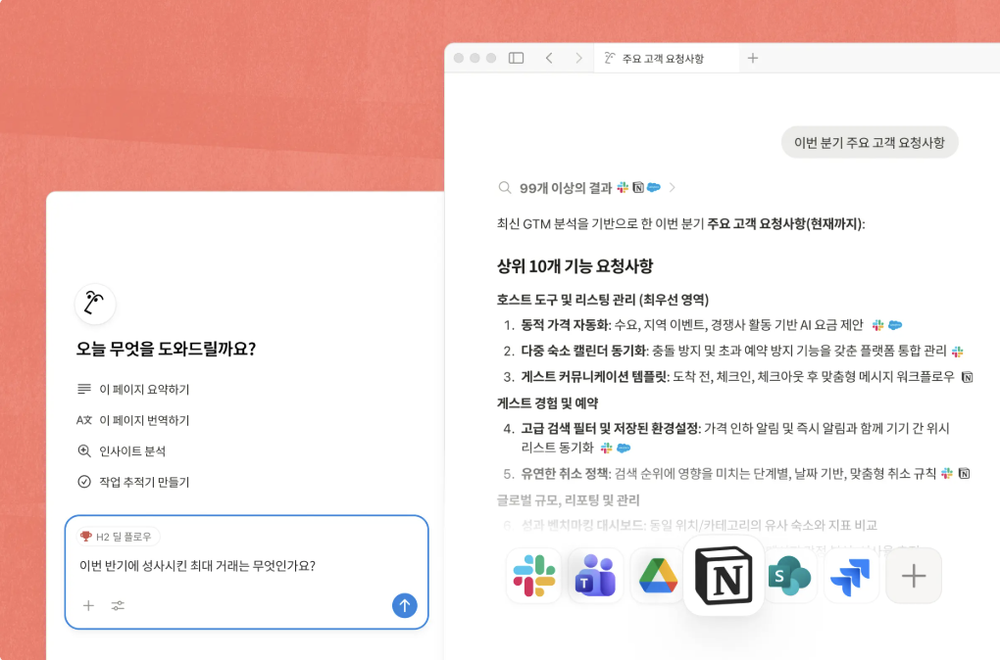

필요한 답 찾기
그 정보를 어디에서 봤더라... 이메일이었나? 프레젠테이션 슬라이드? Slack 메시지? 그럴 땐 Notion에 물어보기만 하세요.

기업 통합 검색 ➔
Notion, Slack, Jira 등 여러 곳에 흩어진 정보를 한 번에 검색하세요.
위키 ➔
회사 지식을 신뢰할 수 있는 하나의 공간에 모아 관리하세요.
팀스페이스 ➔
각 팀의 전용 업무 공간을 제공합니다.
인증된 페이지 ➔
신뢰할 수 있는 최신 콘텐츠를 확인할 수 있습니다.
차트와 대시보드 ➔
데이터를 시각화하고 진행 상황을 한눈에 보여줍니다.
칸반 보드와 간트 차트 ➔
보드, 타임라인 등 다양한 형태로 업무 현황을 살펴보세요.
버전 기록 ➔
모든 변경 내역을 확인하고 이전 버전을 복원할 수 있습니다.
백링크 ➔
워크스페이스의 모든 페이지가 어떻게 연결되어 있는지 확인할 수 있습니다.
링크 미리보기 ➔
Figma, GitHub 등의 링크를 페이지에서 바로 미리보기할 수 있습니다.